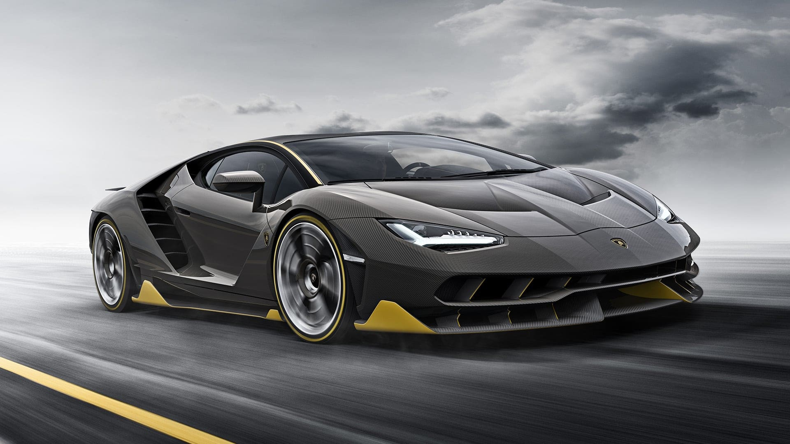
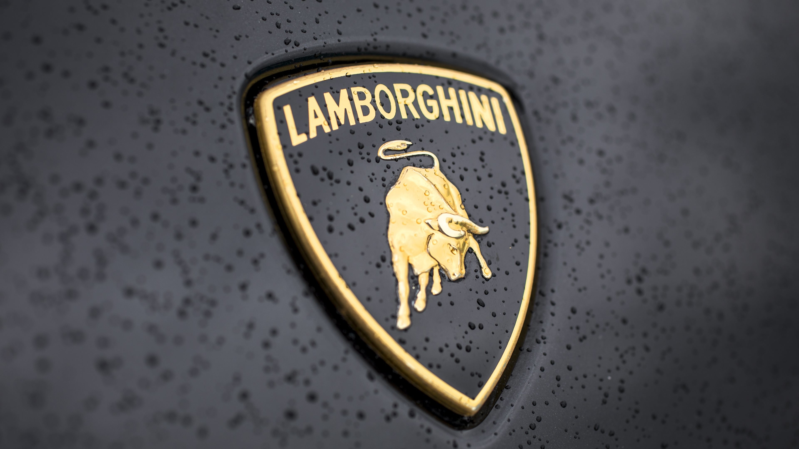
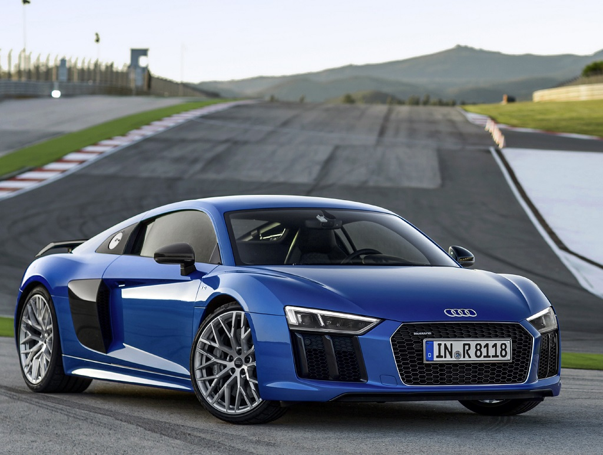
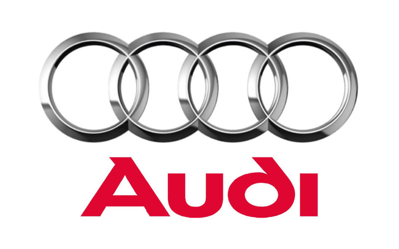
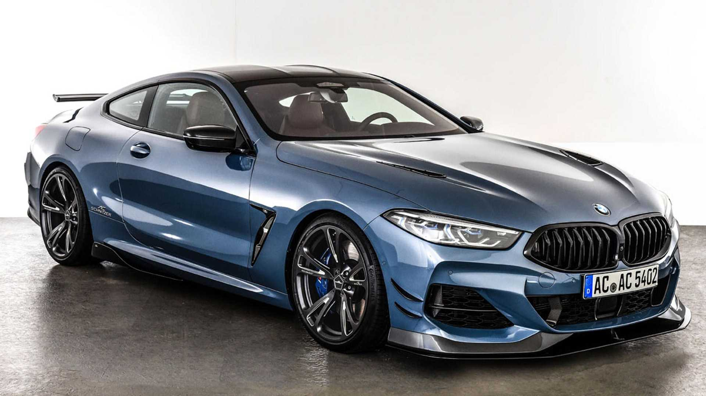
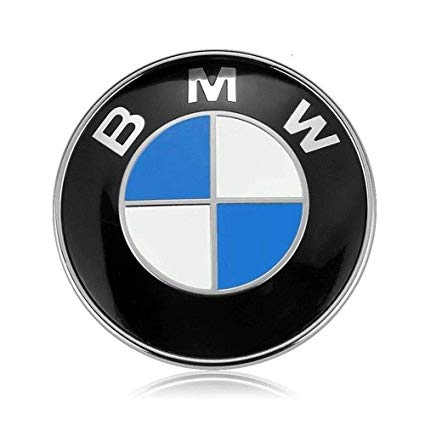
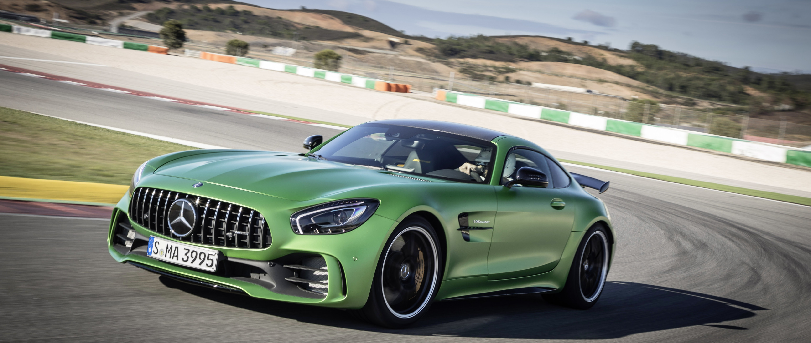
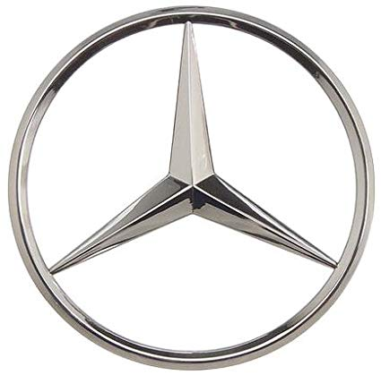

Марки авто


Ferrari N.V.— італійська компанія, що виготовляє спортивні автомобілі та базується в Маранелло. Заснована в 1928 році Енцо Феррарі як «Скудерія Феррарі», компанія спонсорувала пілотів і виробляла гоночні машини до 1947 року. З 1947 року почала випуск «вуличних» спортивних автомобілів під маркою «Ferrari SpA». Впродовж усієї своєї історії, компанія бере участь у різних перегонах, особливо у Формулі-1, де вона має найбільший успіх. Емблема «Феррарі» — жеребець, що гарцює, на жовтому тлі. Традиційний колір автомобілів — червоний.
Ferrari, ми звичайно маємо на увазі щось більше, ніж просто дорогі автомобілі. Для багатьох з нас цей бренд – легенда, створена однією сміливою людиною. Протягом більш ніж п`ятдесяти років машини марки Ferrari залишають далеко за всіх своїх конкурентів. Створені італійцем Энцо Феррари ще в 40-х роках, вони й донині викликають повага й захват Почалося ж усе із мрії маленького хлопчика, якого батько не раз брав із собою на автосоревнования. Саме тоді Энцо й розв`язав зв`язати своє життя з автоспортом. У віці двадцяти років відразу після закінчення Першої світової війни він наймається на роботу в автокомпанию CMN у якості гонщика-випробувача. Проробивши там два роки, він звільняється й переходить у тоді ще маленьку й маловідому компанію Alfa-Romeo, боліди якої вважаються досить перспективними й цікавими У післявоєнні роки автомобільна промисловість Італії розбудовувалася дуже швидкими темпами. І для Энцо Феррари це стало відмінним шансом реалізувати свою мрію – створити власну гоночну команду. Так, в 1929 році в місті Модена з`являється Scuderia Ferrari, у створенні якої молодому італійцеві допомогли як його друзі, так і партнери — Alfa-Romeo, з якими він і продовжив своє співробітництво
Машини, створювані Энцо Феррари, здобувають перемогу за перемогою на всіляких перегонах. Бренд стає всі успешней, і продажу машин продовжують зростати. У середині 50-х починає набирати популярності таке гоночне змагання як Формула-1. В 1952 і 1953 роках знаменитий гонщик Альберто Аскари на спорткаре Scuderia Ferrari здобуває перемогу на цім змаганні, що робить бренд Ferrari найвідомішим і самим бажаним в автомобільному світі До середини 50-х років компанією Ferrari було зроблено вже 250 гоночних машин і 200 дорожніх – для тих, кому важлива комбінація швидкості й зручності. Энцо Феррари не залишається осторонь і від суспільної діяльності – він створює інженерні школи, будує траси Приблизно в це ж час стали з`являтися й конкуренти компанії — Lamborgini, Lotus, Mazeratti, Porsche. Вони періодично обходили відомі спорткары по тем або іншим характеристикам, іноді виривали в них перемогу під час гонок. Але лідерство в більшості випадків продовжувало залишатися за Ferrari. Що примітно, Энцо Феррари ніколи не прибігав до рекламування своїх машин, створюючи бренд винятково на якості Не можна сказати, що історія бренда Ferrari жодного разу не була затьмарена. Автомобільні перегони не обходяться без трагедій, і їх вистачило з лишком, як для компанії, так і для її творця. Так, в 50-х гине відомий гонщик Альберто Аскари, завдяки участі якого у Формулі 1 Scuderia Ferrari і придбала свою світову популярність. Слідом за цим смерть наздогнала Дино Феррари – двадцатичетырёхлетнего сина Энцо. Пізніше на болідах Ferrari 246 один за іншим розбилися 2 пілота, чия зміряти стала не меншою трагедією
 Automobili Lamborghini S.p.A.— італійська компанія, виробник спортивних авто, а також тракторів Lamborghini Trattori. Знаходиться у комуні Сант'Агата-Болоньєзе, біля Болоньї. Компанія заснована у 1963 році Ферруччо Ламборгіні, на той час, він вже був засновником та власником кількох компаній.Сам Ламборґіні, після заснування компанії, володів нею ще 9 років. Теперішній власник компанії — Audi.
На початку 1960-х років виробник тракторів Ферруччо Ламборґіні (1916—1993) почав виявляти інтерес до розробки швидкісних автомобілів. Він мав автомобілі виробництва Osca, Maserati і Ferrari, але жодне авто його не влаштовувало за всіма показниками. Є кілька версій щодо причин, з яких Ламборґіні 1962 року заснував власну фірму. Всі вони зводяться до конфлікту між Енцо Феррарі (власником компанії Ferrari) і Ламборґіні. Найпопулярнішою є версія сина Ферруччо Ламборґіні, за якою його батько прибув на фабрику до Енцо Феррарі поскаржитися на якість зчеплення у своєму автомобілі Ferrari 250 GT. Енцо відправив Ламборґіні назад з побажанням і далі займатися тракторами, бо, мовляв, на автомобілях (тим більше спортивних) Ламборґіні не розуміється. Ламборґіні повернувся на свою фабрику, розібрав трансмісію у власному Ferrari 250 GT і виявив, що виробник багатьох деталей той самий, що й у тракторах «Ламборґіні». На своїх складах він знайшов відповідну заміну, і проблему було вирішено. Автомобільна фірма «Ламборґіні» була створена як дочірня фірма компанії Lamborghini Trattori S.p.A. Вона працює в селищі Сант-Аґата Болоньєзе (Sant'Agata Bolognese) біля Болоньї. Ферруччо вирішив, що його автомобіль буде мати двигун V12, і залучив до свого проекту талановитого інженера Джотто Бідзаріні (Giotto Bizzarrini), який до того розробляв Ferrari V12. Прототип автомобіля, відомий як Lamborghini 350GTV, був представлений на автошоу в Турині 1963 року. Продажі серійної версії цього прототипу були дуже успішними. Народжений під знаком Тельця, ще й аматор кориди, Ферруччо Ламборґіні прикрасив свій логотип зображенням бика. За успішною моделлю 350GT прийшла не менш успішна Lamborghini 400GT, що принесла достатньо коштів для розробки першого суперкара — легендарного Lamborghini Miura. Цей прототип автомобіля продемонстрував сам Ферруччо в листопаді 1965 р. на автошоу в Турині, а вже в березні 1966 на автошоу в Женеві була представлена робоча версія. Miura мала великий успіх — тільки за 1967 продали 111 авто — і компанія здобула популярність по всьому світу. 1971 — Ламборґіні знову здивував світ прототипом нової моделі Lamborghini Countach. Хоча сам автомобіль почали виробляти лише трьома роками пізніше (1974), до того часу він залишався в центрі уваги на кожному автошоу. Прототип мав нові на той час двері, що відкриваються вертикально, задні повітрозабірники і потужний 4-літровий двигун. Проте 1972 року компанія зіштовхнулася зі серйозною кризою — перервався контракт на постачання великої партії тракторів у Південну Америку. Брак коштів змусив Ферруччо продати частину свого тракторного виробництва, яку купила компанія Fiat. Зрештою все тракторне виробництво перейшло у власність Same Deutz-Fahr Group, яка й виробляє трактори «Ламборґіні» досі. Протягом 1970-х років успішні продажі Lamborghini Countach підтримували компанію на плаву. Незабаром автомобільне виробництво стало самодостатнім і прибутковим, а, проте, Ламборґіні продав свою компанію швейцарським інвесторам — спочатку 51 % Жоржу-Анрі Росетті (Georges-Henri Rossetti, 1972), а 1974 решту — Рене Ламеру (René Leimer). Сам Феруччо Ламборґіні помер 1993 року у віці 76 років. Внаслідок нафтової кризи 1970-х рр. продажі спортивних автомобілів різко впали. Компанія «Ламборґіні», в числі інших, зіткнулася з фінансовими проблемами, постачання запасних частин були зірвані. Замовлення на автомобілі були розписані на два роки вперед, і покупці були дуже незадоволені таким терміном очікування. Врешті-решт 1978 італійський суд оголосив компанію банкрутом, і 1981 її купили брати Жан і Патрік Мімрани зі Швейцарії. 1987 — компанію перекупив американський концерн «Крайслер» (Chrysler). У цей час тривала робота над наступником Countach — Lamborghini Diablo. Значні технічні та фінансові ресурси були залучені в модернізацію фірми та її продукції, і кінцевий результат став успіхом — модель Diablo дуже швидко знову вивела компанію на світовий рівень. А проте восени 1993 корпорація Chrysler через фінансові труднощі була змушена продати «Ламборґіні» інвестиційній групі «МегаТех» (Mega-Tech або M'tec), зареєстрованій на Бермудських островах, але справжніми власниками якої були індонезійський нафтохімічний консорціум «Масахара Буана» та Томі Сухарто (Tommy Suharto). 1998 — через ті ж самі фінансові проблеми компанія знову поміняла власника. Цим разом ним стала компанія Audi AG. Новий власник неабияк вплинув на дизайн суперкарів, сьогоднішніх Lamborghini Murciélago. Технічні можливості Audi допомогли створити один із найвишуканіших спортивних автомобілів «Ламборґіні». Автомобілі «Ламборґіні» є одними з найпотужніших, найдорожчих і ексклюзивних автомобілів серійного збирання. Крім того, різні моделі мають свої унікальні технічні новації, наприклад, кузов із вуглеволокна чи високотехнологічні двигуни V10. Оригінальний стиль автомобілів розробляли відомі дизайнери та дизайнерські фірми: Франко Скальйоне (Franco Scaglione), Touring, Zagato, Маріо Марацці (Mario Marazzi), Bertone, ItalDesign і Марчелло Ґандіні (Marcello Gandini).
 Audi— з 1909 року німецький виробник автомобілів. Штаб-квартира розташована в місті Інгольштадт. У 1928 році компанію купує Йорген Расмуссен. Сьогодні компанія займається виготовленням престижних автомобілів. Витоки компанії складні і починаються з початку 20 століття: початкові підприємства, засновані інженером Августом Горхом, і два інших виробника (DKW і Wanderer), об'єднуються у компанію Auto Union у 1932 році. Сучасна епоха Audi почалася в 1960-х роках, коли Auto Union був придбаний компанією Volkswagen у фірми Daimler-Benz. Після перезапуску бренду Audi із введенням в 1965 році серії Audi F103, Volkswagen об'єднав Auto Union з NSU Motorenwerke у 1969 році, створюючи таким чином сучасну компанію. Назва компанії базується на латинському перекладі прізвища засновника Августа Горха. «Горх», що означає «слухати» німецькою мовою, стає «audi» латинською мовою. Чотири кільця логотипу Audi представляють одну з чотирьох автомобільних компаній, які об'єдналися для створення попередника Audi — Auto Union. Гасло Audi — «Vorsprung durch Technik», що означає «Прогрес через технології». Однак Audi USA використовували гасло «Правда — в інженерії» з 2007 по 2016 рік, а з 2016 року не використовували слоган. Audi разом з BMW та Mercedes-Benz є одними з кращих марок розкішних автомобілів у світі.
Згодом Августу Горху було заборонено використовувати «Horch» як торговельне найменування своєї нової компанії, тоді він організував зустріч з близькими діловими друзями — Полем і Францем Фікенхером з Цвікау. У квартирі Франца Фікенхера вони обговорили, як запропонувати нову назву для компанії. Під час цієї зустрічі син Франца спокійно вивчав латинську мову в кутку кімнати. Кілька разів він ніби хотів був сказати щось, але просто «ковтав» слова і продовжував працювати, поки нарешті не вимовив: «Батьку — audiatur et altera pars …чи не було б чудовою ідеєю назвати її audi замість horch?». «Horch!» німецькою мовою означає «Слухай!» або «слухати», а слово «Audi» в особливій наказовій формі «audire» означає «слухати» латинською мовою. Ідея з ентузіазмом була прийнята всіма учасниками зустрічі. 25 квітня 1910 року Audi Automobilwerke GmbH Zwickau (з 1915 року перейменована на Audiwerke AG Zwickau) була зареєстрована в реєстрі компанії і реєстраційному суді Цвікау. Перший автомобіль Audi Type A 10/22HP Sport-Phaeton (16 кВт) був випущений в тому ж році, а наступним став Type B 10/28PS, також в тому ж році. Audi розпочали з 2612-кубового рядного чотирициліндрового двигуна моделі Type A, а потім з'явилась 3564-кубова модель, а також 4680-кубова і 5720-кубова моделі. Ці машини були успішними навіть у спортивних змаганнях. Перша шестициліндрова модель Type M, 4655 см3, з'явилася в 1924 році.
 Bayerische Motoren Werke AG або скор. BMW— німецький автобудівний та авіамоторний концерн і однойменна торгова марка автомобілів преміум- та люкс-класу і мотоциклів. Концерн є материнською фірмою (холдингом) об'єднання BMW Group, в яке входять такі окремі виробництва: мотоцикли BMW, автомобілі марок BMW, Rolls-Royce, MINI, дочірні виробництва BMW M, BMW тощо.
BMW була заснована Карлом Фрідріхом Раппом у жовтні 1916 року, спочатку як виробник авіаційних двигунів, Bayerische Flugzeug-Werke. Округ Мюнхена — Milbertshofen був обраний тому, що він розташований поблизу від Flugmaschinenfabrik Густава Отто — німецького виробника літаків. У 1916 році компанія підписує контракт на виробництво двигунів V12 для Австро-Угорщини. Потребуючи додаткового фінансування, Рапп отримує підтримку Камілло Кастільйоні і Макса Фріца, компанія відтворюється як Bayerische Motoren Werke GmbH. Надмірне розширення стало причиною ускладнень, Рапп покинув компанію, і керівництво компанією було прийнято австрійським промисловцем Францем Джозефом Поппом у 1917 році, компанія була перейменована у BMW AG в 1918. У 1919 році Франц Дімер встановив перший світовий рекорд BMW, піднявшись на висоту 9760 метрів на аероплані з двигуном BMW. Після Першої світової війни, Версальський мирний договір (1919) заборонив виробництво літаків у Німеччині. Отто закрив свою фабрику і BMW перейшла на виробництво гальм для потягів.
 Мерседе́с-Бе́нц (нім. Mercedes-Benz, МФА: [mɛʁˈtseːdəs ˈbɛnts], «Мерце́дес-Бенц»), або просто Мерседес — німецька торгова марка транспортних засобів та назва ряду компаній-автовиробників, що належать автобудівному концерну «Даймлер» (нім. Daimler AG) та/або виробляють продукцію під цією маркою. Торгова марка належить автобудівному концерну Daimler AG.
Історія цієї марки складається з історій двох відомих автомобільних брендів — Mercedes («Мерседес»), що випускалися німецькою компанією Daimler-Motoren-Gesellschaft («Даймлер-Моторен-Гезелльшафт») і Benz («Бенц»), які будувалися фірмою Benz & Cie.. Обидві компанії цілком успішно розвивалися самостійно, але 1926 року злилися в новий концерн «Даймлер-Бенц». Benz 1886 року створено триколісний самохідний візок з бензиновим двигуном. Того ж року його творець Карл Бенц отримав патент на винахід. Перший у світі триколісний автомобіль запустили у серійне виробництво. Через сім років, поступившись Даймлеру першістю, Карл Бенц створив свій чотириколісний автомобіль, а наступного року ще досконаліша конструкція під дивною назвою «Велосипед» пішла в серію. 1901 року, незабаром після випуску Даймлером нової моделі «Мерседес-35PS» стає зрозумілим, наскільки «Бенц» відстає від прогресу. Щоб надолужити упущене, акціонери запрошують в компанію французького інженера Маріуса Барбару. Через технічні розбіжності Карл Бенц залишає засновану ним же компанію. Незабаром стало очевидно, — француз не виправдав покладених надій. Ідучи за логікою, що німецькі автомобілі мають робитися німецькими руками, у фірму, на посаду головного інженера, запросили Фріца Ерле. Знову не пощастило. І тільки з приходом в компанію талановитого інженера Ганса Нібеля справи поступово пішли в гору. 1909 року, створивши цілий ряд прекрасних легкових автомобілів, фірма побудувала найвідоміший гоночний автомобіль того часу «Блітц Бенц» з мотором потужністю 200 к.с. і карколомним об'ємом 21594 см³. У післявоєнні роки створено безліч нових моделей, більшість з яких з успіхом випускалися до середини двадцятих років. Всього з моменту початку виробництва 1886 року і до об'єднання з «Даймлер-Моторен-Гезелльшафт» 1926 року фірма «Бенц» виготовила 47555 автомобілів, включаючи легкові автомобілі, вантажівки і мінібуси. Daimler 1890 року Готліб Даймлер, в містечку Бад Каннштат неподалік Штутгарта, заснував компанію свого імені — «Даймлер-Моторен-Гезелльшафт», вирішивши випускати, створений чотирма роками раніше ним самим і Вільгельмом Майбахом, чотириколісний автомобіль. Після низки не дуже вдалих спроб, які все ж знайшли своїх захоплених покупців, конструктору В. Майбаху 1901 року вдалося створити успішний зразок. За наполяганням консула Австро-Угорської імперії в Ніцці і, за сумісництвом, голови представництва «Даймлер» у Франції Еміля Еллінека автомобіль назвали на честь Maria de las Mercedes, Діви Марії Милостивої (від латинського «merces», «дари»), так само в честь якої були названі всі його діти, в числі яких відома дочка консула Мерседес, і майно (яхти, будинки, готель і казино). Перший «Мерседес-35PS», а саме так він називався, вирізнявся чотирициліндровим двигуном з робочим об'ємом 5913 см³, класичним розташуванням основних агрегатів і красивою (на ті часи) зовнішністю. Через рік світ побачив більш досконалу конструкцію під назвою «Мерседес-Симплекс». Розширився модельний ряд. Найвідоміші представники цієї серії носили горді імена «Мерседес-40/45PS» і «Мерседес-65PS» з двигунами об'ємом 6785 см³ і 9235 см³ відповідно, які дозволяли розвивати швидкість до 90 км/год. До Першої світової війни «Даймлер-Моторен-Гезелльшафт» встигла випустити широкий модельний ряд своїх автомобілів з різними двигунами (від 1568 см³ до 9575 см³), розрахований на різних споживачів, включаючи розкішні, практично безшумні автомобілі, використовуючи двигуни з безклапанним газорозподіленням вироблені за патентом американської компанії «Найт». Відразу після війни Пауль Даймлер починає проводити експерименти з компресором, що дозволяє в півтора рази підвищити потужність двигуна. Прийшовши на посаду головного інженера 1923 року, Фердинанд Порше довів експерименти до логічного завершення, створивши 1924 року один з найвидатніших автомобілів світу — «Мерседес-24/100/140PS» з чудовим шасі і шестициліндровим компресорним двигуном об'ємом 6240 см³ і потужністю 100—140 к.с. До 1926 року «Даймлер-Моторен-гезелльшафт» випустила на всіх своїх заводах в загальній складності 147 961 автомобіль, причому максимальну продуктивність досягнуто 1918 року. Незважаючи на всі труднощі того останнього військового року вдалося виготовити 24 690 автомобілів. Об'єднання конкурентів Після злиття 1926 року фірм Daimler і Benz, новий концерн Daimler-Benz зміг ефективно використовувати досвід і знання конструкторів обох компаній, яких очолив Фердинанд Порше. Він повністю оновив виробничу програму, взявши за основу останні моделі Daimler, що випускалися тепер під маркою Mercedes-Benz. Першою новою розробкою Порше 1926 року стала «компресорна» серія К, що включала модель 24/110/160 PS з 6-циліндровим мотором об'ємом 6240 см³. За велику потужність і швидкість (до 145 км/год) її прозвали «смертельною пасткою», вона стала базовою для більш відомої серії моделей S. 1928 року Порше покинув Daimler-Benz, і його місце зайняв Ганс Нібель (Hans Nibel). Під його керівництвом випущено легковики Mannheim-370 («Маннхайм-370») з 6-циліндровим мотором робочим об'ємом 3,7 л і Nurburg-500 («Нюрбург-500») з 8-циліндровим 4,9-літровим агрегатом, що базувалися на останніх моделях Порше. 1930 року з'явився Großer Mercedes (укр. Великий Мерседес) або Mercedes-Benz 770 з 8-циліндровим 200-сильним мотором об'ємом 7655 см³ з нагнітачем. 1931 року фірма дебютувала в секторі малолітражних автомобілів, де її представляв досить вдалий Mercedes 170 з 6-циліндровим мотором 1692 см³ та незалежною підвіскою передніх коліс. 1933 року з'явилися легковий Mercedes-Benz 200 і спортивний Mercedes-Benz 380 з 2,0 і 3,8-літровими моторами. Останній з них, оснащений нагнітачем, розвивав 140 к.с. На базі спортивної моделі 1934 року створили Mercedes-Benz 500K з 5-літровим двигуном, що став через 2 роки основою для більш відомого великого «компресорного» автомобіля Mercedes-Benz 540K. У 1934-1936 роках фірма випустила легкий Mercedes-Benz 130 з 4-циліндровим 26-сильним двигуном заднього розташування робочим об'ємом всього 1308 см³, за яким пішли родстер 150 і седан 170H. Під технічним керівництвом головного конструктора Макса Зайлера (Max Sailer), який змінив Нібеля 1935 року, були створені популярна недорога модель 170V з 4-циліндровим мотором об'ємом 1697 см³, перший в світі серійний легковий автомобіль з дизельним двигуном 260D (1936 рік), а також новий «Великий» Mercedes-Benz 770 (1938 рік) з рамою з балок овального перетину і задньою пружинною підвіскою, що служив нацистським лідерам. На модифікованому Mercedes-Benz W125 Рудольф Караччіола встановив 28 січня 1938 рекорд швидкості 432,7 км/год для машин об'ємом 5000 см³ — 8000 см³. З 1936 розроблявся автомобіль Mercedes-Benz T 80 з прогнозованою швидкістю 600—750 км/год, але через початок війни рекордні заїзди не відбулись. Mercedes-Benz в період Другої світової війни Під час війни Daimler-Benz випускала як вантажні, так і легкові автомобілі різних класів. Однак, двотижневе повітряне бомбардування англо-американськими ВПС у вересні 1944-го року перетворили Daimler-Benz Aktiengesellschaft в купу руїн. Руйнування великого концерну оцінювалося по-різному, — головний цех в Штутгарті був зруйнований на 70 %, ходовий і кузовний цехи в Зіндельфінгені — 85 %, цех вантажівок в Гаггенау — знищений повністю. Колишній фабриці Benz und Cie в Мангаймі пощастило найбільше — всього 20 % руйнувань, а завод дизельних двигунів Berlin-Marienfeld, куплений Daimler'ом в 1902, повністю зрівняно із землею. До січня 1945-го року оцінку руйнування провели повністю і рада директорів ухвалила, що «Daimler-Benz фізично більше не існує». Післявоєнний період Серійне виготовлення автомашин відновили 1947 року. У 1950-х роках Mercedes-Benz зайняв колишні провідні позиції у світі. На початку 1960-х років провідне місце в експорті машин компанії зайняли США. З кінця 1980-х посилилась конкуренція зі сторони автовиробників BMW, Audi, але у 2012, 2013 роках компанія побила свої рекорди з продажу автівок.